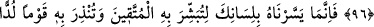
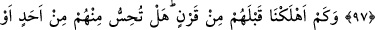
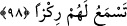

HAKÎKÎ DOSTLUK
96. İman edip salih amel işleyenler için Rahman (gönüllerde) bir sevgi
yaratacaktır.
97. Biz onu (Kur’an’ı) senin dilinde (indirerek) kolaylaştırdık ki, onunla
muttakîleri müjdeleyesin ve inatçı bir kavmi onunla uyarasın.
98. Biz, onlardan önce nice nesilleri helâk ettik. Sen, onlardan herhangi birinden
(bir varlık emâresi) hissediyor veya onlara âid cılız bir ses işitiyor musun?
“İman edip sâlih amel işleyenler” kalbin ameli ve âzâların amelini birleştirenler
“için Rahman” onlar, îman ve salih amel hâricinde yakınlık, arkadaşlık veya sevgi elde
etmek için bilinen bir yola başvurmadan kalblerde “bir sevgi yaratacaktır.”
Âyette gelecek zaman ifâdesinin kullanılmasının iki sebebi olabilir:
1- Sûre Mekke’de indirilmiştir. O zaman mü’minler kafirler tarafından zulüm
görüyorlardı. Allah onlara İslam güçlendiği zaman böyle bir şey olacağını vaad etti.
2- Ya da bu durum kıyamet günü olacak. Allah, o mü’minlere ızhâr edeceği iyilikleri
sebebiyle diğer mahlûkâta sevdirecektir.
et-Te’vîlâtü’n-Necmiyye’de şöyle der: “Bu âyette işâret edilmektedir ki, îman tohumu
kalb toprağına düşüp sâlih amellerin suyuyla sulanınca artar ve meyve verinceye kadar
gelişir. Meyvesi Allâh’ın, peygamberlerin, meleklerin ve bütün mü’minlerin sevgisidir.
Nitekim Allah şöyle buyurmuştur: “Rabbinin izniyle her zaman yemişini verir...”
(İbrahim, 14/25)”
Bilesin ki muhabbet, önce muvâfakat, sonra meyil, sonra sevgi (vüdd), sonra aşk
(hevâ), sonunda da deli divâne (veleh) olmaktır. Muvafakat insan tabîatına, meyil nefse,
sevgi kalbe, muhabbet kalbin bâtını olan fuâda aiddir. Aşk (hevâ), sevginin fazla oluşu,
deli divâne olmak (veleh) ise hevânın artmasıdır. Denilmiştir ki: Önce muhabbetin nuru,
sonra aşkın ateşi, daha sonra şehvetin harâreti, sonra latîf buhar, sonra ince nefes, sonra
da kuru hevâ gelir.
Bir adam Abdullah b. Cafer’e: “Falanca kişi beni sevdiğini söylüyor, doğru
söylediğini nasıl bilebilirim?” diye sordu. Abdullah b. Cafer şöyle cevap verdi:
“Kalbini yokla, eğer kalbin onu seviyorsa o da seni seviyordur.” Nitekim bir beyitte
şöyle denilmiştir: